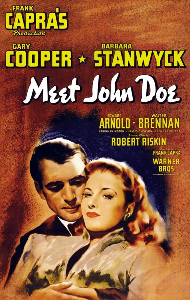

Meet John Doe
Starring: Gary Cooper, Barbara Stanwyck, Edward Arnold
Director: Frank Capra
Writer: Robert Riskin, Richard Connell
Producer: Frank Capra
Meet John Doe is a 1941 American comedy-drama film directed and produced by Frank Capra, written by Robert Riskin, and starring Gary Cooper, Barbara Stanwyck, Edward Arnold, Walter Brennan, Spring Byington, James Gleason, and Gene Lockhart.
Watch Online: Internet Archive
Trivia
- Nominated for: Academy Award for Best Story.
- The film was screenwriter Robert Riskin's last collaboration with Capra.
- The screenplay was derived from a 1939 film treatment, titled "The Life and Death of John Doe", written by Richard Connell and Robert Presnell who would go on to be the recipients of the film's sole Academy Award nomination for Best Original Story.
- The treatment was based upon Connell's 1922 Century Magazine story titled "A Reputation". Gary Cooper was always Frank Capra's first choice to play John Doe.
Previous Showings
7 Runs • 2 Festivals
Original Billings: 1 run (May 25, 1941)
Original Run: May 25, 1941 (Sunday - Wednesday)
All runs on record (7):
- May 25, 1941 (Sunday - Wednesday)Gary Cooper, Barbara Stanwyck
- March 23 - 25, 1990w/ Arsenic and Old Lace
- November 23 - 25, 1991w/ Ball of Fire
- November 15 - 17, 1995w/ Dirigible
- June 7 - 8, 1997w/ Here Comes the Groom
- February 21 - 23, 2014Frank Capra Festivalw/ The Miracle Woman
- February 8 - 9, 2025The Films of Frank Capraw/ State of the Union